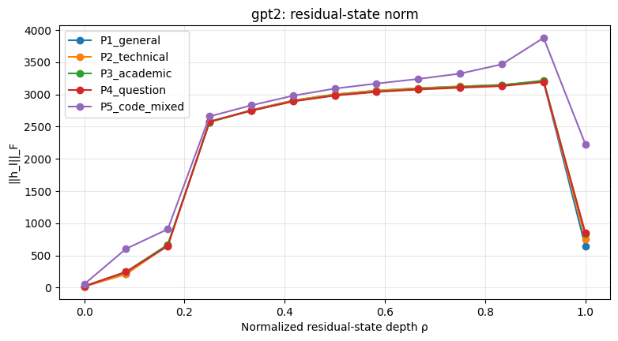
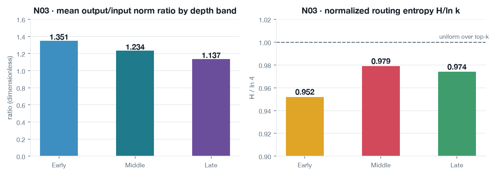

One measurement programme, three generations: a calibration gate, a frozen evaluation manifest, and MoE routing inside a 117B-parameter model — every number shipped with SHA-256 provenance.
Claim — a residual stream can be measured the same way at every scale, and the protocol (gate → observables → manifest → gates → provenance) is what makes the numbers comparable across generations.
6checkpoints calibrated (G0 gate)
14.4ktext x block rows captured
36blocks · full / sliding attention
128/4experts per token (top-4)
G0calibration & lens equivalence
›
N02frozen observables + manifest
›
N03MoE routing-conditional
Artifacts: physllm_g0 (G0 gate v1.0.2) · physllmN02 · PhysLLM_N03_Antigravity_Workspace
All numbers are project measurements. Figures rendered from project artifacts; no project file was modified.
G0 · foundationCalibration before claims
G0_Calibration_and_Lens_Equivalence v1.0.2, target REAL-PASS: prove the rig (hooks, dtype, eager/safe mode, tolerances) is lens-equivalent across architectures before any science claim.
checkpoint
dtype · eager
tol
gpt2
fp32 · yes
1e-3
pythia-160m
fp32 · yes
1e-3
Llama-3.2-1B
bf16 · no
1e-2
gemma-2-2b
fp32 · yes
1e-3
Qwen2.5-0.5B
bf16 · no
1e-2
gpt-oss-20b
bf16 · safe
1e-2
gemma-2 adds softcapping + sliding-window; gpt-oss-20b runs safe_mode (attention off, OOM guard) and drops the first token (attention-sink policy).
G0 · calibration setC-Set: EN / KO parallel
Four propositions in translation-parallel form (same claim, two languages), fixed as a reference set:
C0a small bird crosses a quiet garden C1the system records several independent sensors C2physics-guided ML gives interpretable representations C3LLMs process information through hidden residual streams (self-referential edge case)
Protocol: translation-parallel first; a Korean-specific structural_independent phase is registered but not written yet. Eligible families (llama-3, llama-3.1, gemma-2, qwen-2.5) run the KO set; ineligible models auto-skip with a logged reason.
G0 · conventionsNormalisation is data
Depth, position and density conventions are fixed once and reused by every later generation:
rho = l / max(L, 1) · rho = l / max(L-1, 1) tau = t / max(T - 1, 1)
Residual index (0..L) and block-output index (0..L-1) use different normalisers; the first token is excluded for tau.
Length-matched strata: bins 16 / 32 / 64 / 128 / 256 / 512, minimum 20 texts per bin — below that a bin is reported INCONCLUSIVE.
YAML is data — formulas are never eval'd; a wrong edit is caught immediately.
G0 · pilotFirst run

Fig. 1. G0 pilot output (Colab bundle, Qwen3 finalization v1.0.4).
Question that started it: are layer-wise norms and updates Δhl = hl+1 − hl finite and correctly shaped?
N02 · week 2Three observables, frozen
gpt2 / pythia-160m, 12 blocks, instrumented block by block. The observable set is frozen for traceability:
• The five pilot prompts are excluded from the main evaluation.
• The earlier synthetic chart was not real model data.
• N02's scientific hypothesis status stays INCONCLUSIVE; the baseline is frozen for traceability, not for claims.
• 24 code texts carry no domain word; 12 share one template.
• frozen_for_confirmatory_analysis: false — human review pending.
N03 · week 3Three branches, one active
N02 deferred three architecture families; N03 registers them and runs M1 (MoE routing-conditional). M2 (MLA latent attention) and M3 (SSM / hybrid) stay design-stage only — no claim may use them yet.
Residual-stream measures are inherited from N02; N03 adds the branch split and the router:
attn_shareattn²/(attn²+moe²) of the pre-residual output routingtop-4 expert ids + gate weights (softmax over the top-k logits, not the full 128) entropyrouting entropy and H/ln k (k = 4) loadper-text/layer expert load histogram
N03 · resultResidual ratio falls, routing stays flat

Fig. 6. Depth-band summary over 36 blocks; mean normalized entropy 0.968.
Output/input ratio 1.351 → 1.234 → 1.137 across early/middle/late blocks, while routing entropy stays near uniform (H/ln4 ≈ 0.95–0.98).
Every capture passes the dataset gates (G1, M1–M5, P1) and ships manifest SHA-256, code SHA + git revision/dirty, tokenizer ID, activation dtype, seed 0, package versions. Resume is idempotent and refuses a foreign out-dir. 30 gate tests pass, incl. an independent routing recomputation.
N03 · auditT0 and what is pending
The tokenizer audit recomputes token counts for every candidate: gpt2 and pythia-160m clean (0 mismatches), but gpt-oss leaves 3 long-tier texts out of band (127–128 tokens vs a 129 floor) — not random: 11 of 33 long × question_dialogue texts sit within 2 tokens of the floor while other long styles clear it by 21+. Options A / B / B' / C are quantified in the decision memo — choice pending.
Done: scope, M1 capture script, gate tests, notebook simulator, real end-to-end capture on a tiny checkpoint, routing artifact for 400 texts, T0 audit. Pending: T0 choice · the paid 80 GB session · repo approval.
Across generationsWhat carries forward
One observable definition survives every generation:
Δhl = hl+1 − hl · ‖Δhl‖F/√T · cos(hl, Δhl)
G0 proved the rig is lens-equivalent across six checkpoints and two languages; N02 froze what to measure and how to sample; N03 reuses both and adds the router — same gates, same SHA-256 discipline, same habit of stating the limits next to the number.
Limits: exploratory descriptive statistics — no causal or topic-clustered inference · no independent validation against real router dispatch or an fp32 reference run · candidate manifest not frozen · max branch-identity residual 0.0187 (N03), 2.3e-5 (N02).